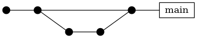
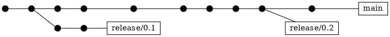

Releasing and publishing#
Releasing a new version is a critical procedure. It should be automated as much as possible to avoid human error.
This sections explains in detail the Git workflow to be followed together with the different steps that developers need to follow to create a successful release.
Semantic versioning#
PyAnsys library releases are managed through both automated and manual review processes.
PyAnsys follows the Semantic Versioning, which produces release names in the
form of X.Y.Z, where each letter corresponds to an integer value. This
notation can also be understand as MAJOR.MINOR.PATCH:
Major version when you make incompatible API changes.
Minor version when you add a feature in a backwards-compatible manner.
Patch version when you make backwards compatible bug fixes.
One exception exists. MAJOR versions are not expected to be regularly released
when any incompatible API changes are made. They are only expected to be
released with major, globally breaking API changes. This matches the versioning
methodology for the “big three” data science Python libraries: NumPy,
SciPy, and pandas.
Note that 0.MINOR.PATCH packages are expected to have fluid APIs and should
be solidified at the 1.MINOR.PATCH release. At that point, APIs are expected
to be much more stable.
PyAnsys libraries should not match product versions.
For example, the PyMAPDL library ansys-mapdl-core might have the version
0.59.0 whereas the product version is 21.2 (2021 R2). The reason behind
this is PyAnsys libraries are expected to be developed outside the product
release cycle in a rapid CI/CD manner.
Branching model#
The branching model for a PyAnsys project enables rapid development of features without sacrificing stability. The model closely follows the Trunk Based Development approach:
The
mainbranch is the primary development branch. All features, patches, and other branches should be merged here. While all PRs should pass all applicable CI checks, this branch might be functionally unstable if changes have introduced unintended side effects or bugs that were not caught through unit testing. The version is always suffixed with.dev0in themainbranch.Fig. 2 The main branch is the primary development branch.#
When a minor release candidate is ready, a new
releasebranch is created frommainwith the next incremented minor version (for example,release/0.2). Thisreleasebranch is thoroughly tested. When deemed stable, it is tagged with the version (0.2.0in this case). Older release branches should not be deleted so that they can be patched as needed.There is one or more
release/branches based on minor releases (for example,release/0.2) that contain a stable version of the code base that is also reflected on PyPI. Hotfixes fromfix/branches should be integrated both tomainand to these branches. When creating a new patch release is necessary, these release branches have their version updated and are tagged with a patched Semantic versioning (for example,0.2.1). This triggers CI to push to PyPI so that hotfixes for past versions can be rapidly push without having to worry about untested features.Fig. 3 Release branches are created based on minor releases.#
Releasing major and minor versions#
When creating a new major or minor version, ensure your origin main branch is
up to date with:
git checkout main && git fetch origin main && git rebase origin/main
If you encounter any issues when running previous command, solve those before continuing with the release. Ensure that your style, tests, and documentation checks are passing too.
Create a new branch for the version you want to release with:
git checkout -b release/X.Y
Update X or Y version numbers in your project and replace the dev0
with a 0.
Check all locations, including
The setup.py file, The pyproject.toml file, and any
__init__.py or __version__.py your project may contain.
Stash and commit previous changes with:
git add . && git commit -m "Bump version X.Y.0"
Tag the previous commit with:
git tag vX.Y.0
Push the commit and the tag with:
git push -u origin release/X.Y && git push origin vX.Y.0
Releasing patched versions#
Patched versions allow you to fix issues discovered in published releases by
cherry-picking these fixes from the main branch.
To create a patched version, you must first identify which release/X.Y
branch it belongs to. Then, ensure your local release/X.Y is up to date
with the origin one because other patched versions may have been introduced.
git checkout release/X.Y && git fetch origin release/X.Y && git rebase origin/release/X.Y
If you encounter any issues when running this command, solve them before continuing with the release.
Now, cherry-pick the fix commit
from main, which solves for the bug. Do not merge changes from main into the
release branch. Always cherry-pick them.
git cherry-pick <commit hash>
Ensure that your style, tests, and documentation checks are also passing.
Increase by one unit the value of Z in your project version. Stash and
amend these new changes with:
git add . && git commit --amend -m "Bump version X.Y.Z"
Tag the previous commit with:
git tag vX.Y.Z
Push the commit and the tag with:
git push -u origin release/X.Y && git push origin vX.Y.Z
Publishing artifacts#
When a new version is released, some artifacts are provided with it. In Python,
these Artifacts are typically the Wheel and Source files.
Documentation in the form of PDF and HTML files are also considered artifacts.
Do not distribute artifacts without approval.
For more information about requesting approval for publishing your project, see Project approval.
Manual release processes are discouraged and should be avoided. Automated release processes minimize human-error and alleviate workload on teams. For more information, see :ref: Automating Release Process.
Publishing privately on PyPI#
It is sometimes necessary to host and pull packages that are not ready to be hosted on the public PyPI. For example, if a PyAnsys library requires auto-generated gRPC’ interface files from a feature or service that is still private, this package should be hosted on a private PyPI repository.
ANSYS, Inc. has a private repository at PyAnsys PyPI. Access is controlled
via a Personal Access Token (PAT) and a PYANSYS_PYPI_PRIVATE_PAT
password in the form of a GitHub secret which is available only to repositories
within PyAnsys.
A note on secrets access in forked repositories
Forked GitHub repositories do not have access to GitHub secrets. This is designed to protect against PRs that could potentially scrape tokens from PyAnsys CI/CD.
Upload#
You can upload packages to the private repository with the following short bash
script. If you are operating out of a GitHub CI pipeline, email the PyAnsys Core
team at pyansys.core@ansys.com for the
required PAT user name and PYANSYS_PYPI_PRIVATE_PAT password.
Assuming that you are already in a Python repository’s dist/ directory that
contains your wheel, source distribution, or both, you can upload to the private
repository with:
pip install -U pip build twine
REPOSITORY_URL="https://pkgs.dev.azure.com/pyansys/_packaging/pyansys/pypi/upload"
python -m twine upload dist/* \
-p ${{ secrets.PYANSYS_PYPI_PRIVATE_PAT }} \
-u PAT \
--repository-url $REPOSITORY_URL
Alternatively, instead of command-line tool arguments for Twine, you can use environment variables:
export TWINE_USERNAME=PAT
export TWINE_PASSWORD=$PYANSYS_PYPI_PRIVATE_PAT
export TWINE_REPOSITORY_URL="https://pkgs.dev.azure.com/pyansys/_packaging/pyansys/pypi/upload"
python -m twine upload dist/*
Download#
You can download a Python package from PyAnsys PyPI with:
INDEX_URL=https://$PYANSYS_PYPI_PRIVATE_PAT@pkgs.dev.azure.com/pyansys/_packaging/pyansys/pypi/simple/
pip install ansys-<product/tool>-<library> --index-url $INDEX_URL --no-dependencies
Note
A read-only PAT is available for users who need only to download the package. It can be stored as an environment variable and be used as described in the preceding code example. To get access to this PAT, email the PyAnsys Core team at pyansys.core@ansys.com <pyansys.core@ansys.com>.
Warning
Take care to always use the --index-url switch rather than the
--extra-index-url switch. As noted in pip Documentation, the
--index-url switch changes the Python Package Index, which forces pip
to use only packages from that package index.
The Ansys package index uses PyPI upstream. This prevents other users from being able to inject packages from PyPI that would supersede Ansys packages, even if they are of a higher version.
This is not the case if you use --extra-index-url, which adds to rather
than replaces the default package index. For security, do not use
--extra-index-url.
Publishing to PyPI#
Publishing Artifacts to PyPI is the way of distributing Python libraries. Publishing to PyPI requires a PYPI_TOKEN for your project. To
generate and get access to this token:
Contact Alexander Kaszynski requesting access to the
PYPI_TOKEN. The value of this token depends on whether you are Initially publishing to PyPI or Republishing to PyPI.Add this token to the
Secrets/Actionssection in your repository.
Initially publishing to PyPI#
If it is the first time that you are publishing your project to PyPI,
you must obtain the global PYPI_TOKEN for the PyAnsys user in
PyPI by contacting Alexander Kaszynski.
Republishing to PyPI#
If you are republishing your project to PyPI, you no longer need to have
the global PYPI_TOKEN but rather a unique project token. To
obtain your unique project token, contact Alexander Kaszynski or Maxime Rey. Once you have received it,
update the token value in the Secrets/Actions section.
Publishing to GitHub#
Publishing Artifacts to GitHub is also possible. These are available
in the https://github.com/pyansys/project-name/releases section.
Publishing Artifacts into GitHub manually must be avoided to reduce
human-error. For more information, see Automating the release process.
Automating the release process#
Automating the release process is a good practice because it minimizes human error and alleviates the developer’s workload.
The following GitHub Actions code is triggered every time a new tag gets pushed
to your project repository. This workflow depends on the success of the style, tests,
docs, and build workflows. For more information, see Workflow examples.
name: CI
on:
workflow_run:
workflows: ["style", "tests", "docs", "build"]
types:
- completed
env:
MAIN_PYTHON_VERSION: 3.9
concurrency:
group: ${{ github.workflow }}-${{ github.ref }}
cancel-in-progress: true
jobs:
release:
name: Release
if: |
github.event_name == 'push' &&
contains(github.ref, 'refs/tags') &&
github.event.workflow_run.conclusion == 'success'
runs-on: ubuntu-latest
steps:
- name: Checkout repository
uses: actions/checkout@v2
- name: Set up Python
uses: actions/setup-python@v2
with:
python-version: ${{ env.MAIN_PYTHON_VERSION }}
- name: Install dependencies
run: |
python -m pip install --upgrade pip build wine
- name: Build artifacts
run: |
python -m build && python -m twine check dist/*
- name: Publish to PyPI
env:
TWINE_USERNAME: __token__
TWINE_PASSWORD: ${{ secrets.PYPI_TOKEN }}
run: |
python -m twine upload --skip-existing ./**/*.whl
python -m twine upload --skip-existing ./**/*.tar.gz
- name: Publish to GitHub
uses: softprops/action-gh-release@v1
with:
files: |
./**/*.whl
./**/*.tar.gz